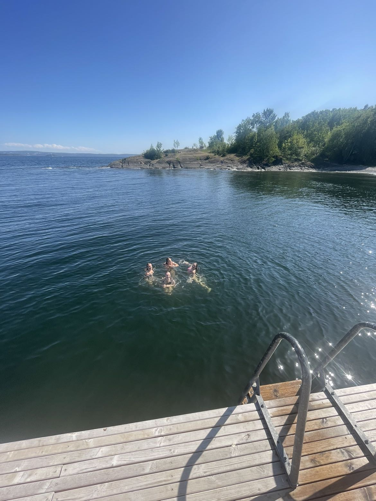
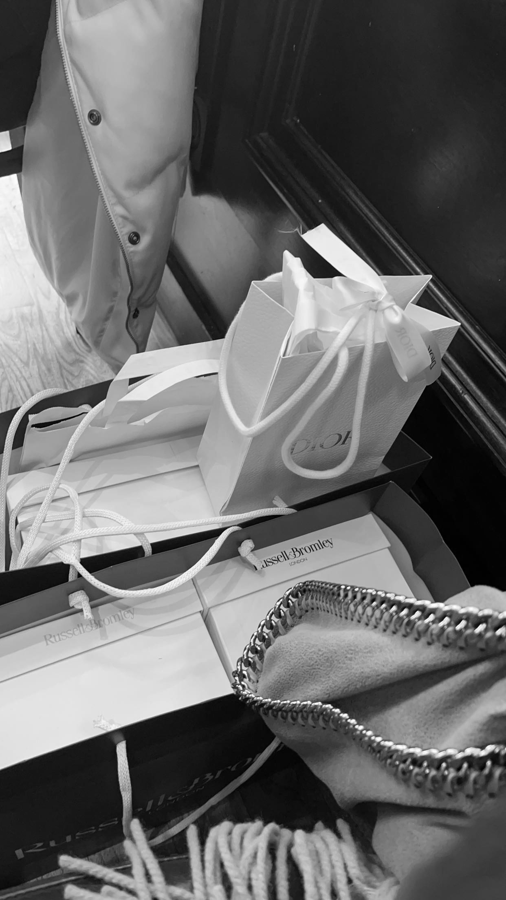
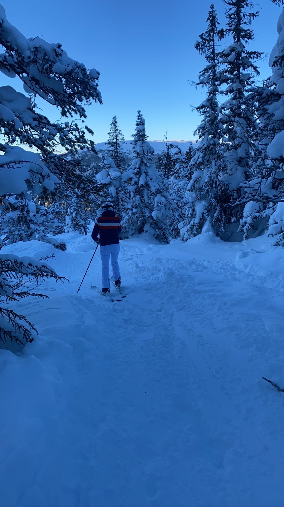
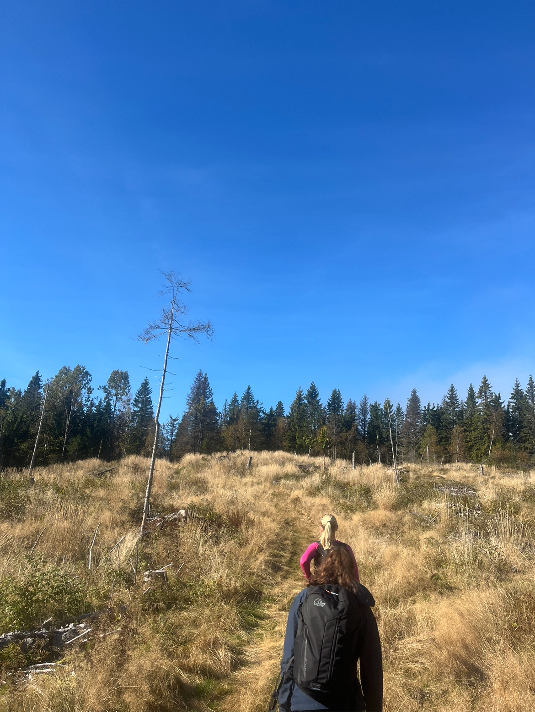
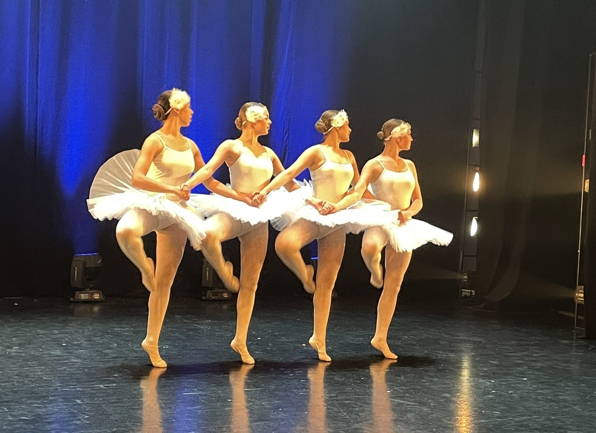
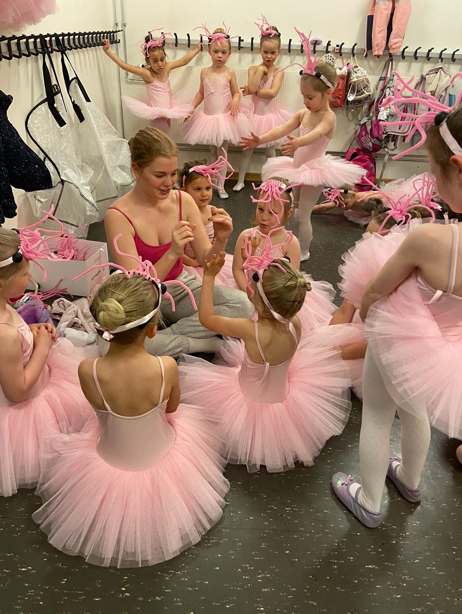
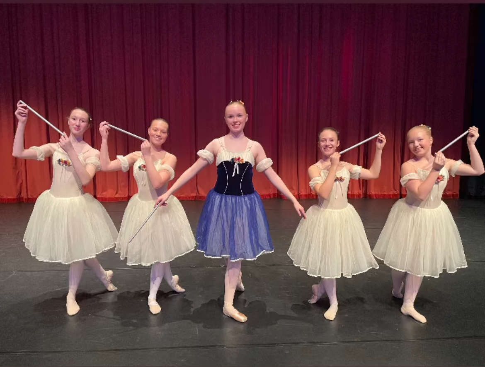
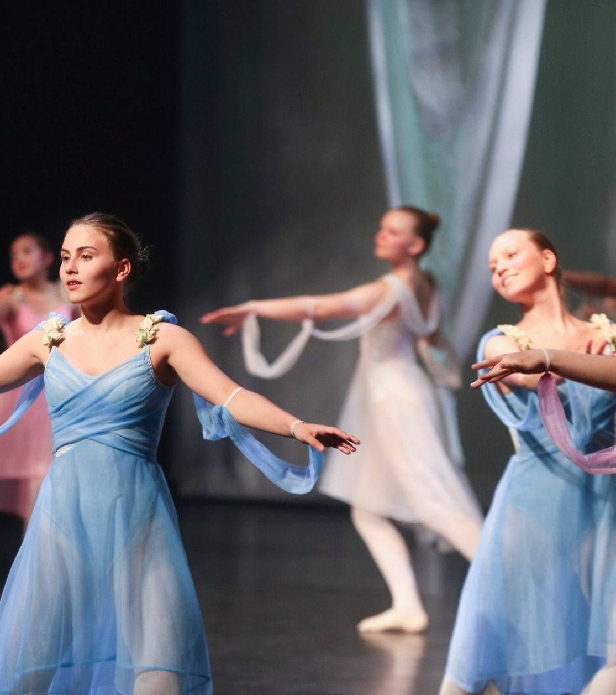
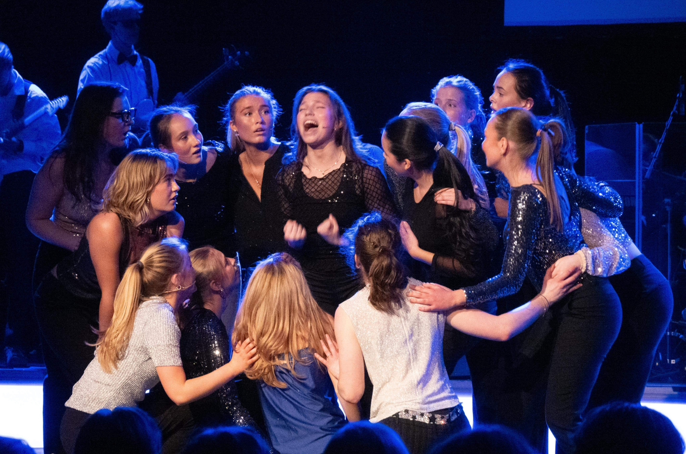

Fritid
Generelle interesser:

Bading

Shopping

Stå på ski

Gå på tur


Dans
Dans har alltid vært en stor del av livet mitt – jeg har danset så lenge jeg kan huske. Mesteparten av tiden har jeg danset ballett, men jeg har også danset både jazz og samtidsdans. Gjennom dansen har jeg fått mange gode venner, fine minner og lært utrolig mye, både om meg selv og om samarbeid. Nå danser jeg på KGB Dans, der jeg går på jazz en gang i uka. Selv om jeg ikke danser like mye som før, betyr dans fortsatt veldig mye for meg.


Revy

Om revyen:
Revy er en type forestilling som mange videregåendeskoler i Norge setter opp, blandt annet Nadderud. Nadderudrevyen består av ulike sketsjer, danser og sanger, og hele revyen er lagd av og med elever på Nadderud. Jeg har vært danser i revyen siden 1.klasse. i fjor ble jeg dansesjef, og i år har jeg blitt revysjef. Revysjefene er de som styrer hele revyen, of har annsvar for at alt